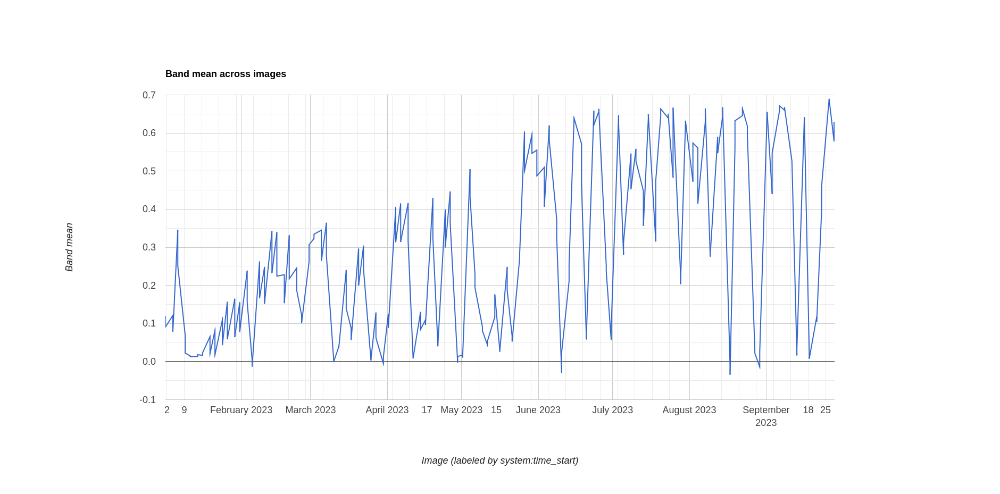
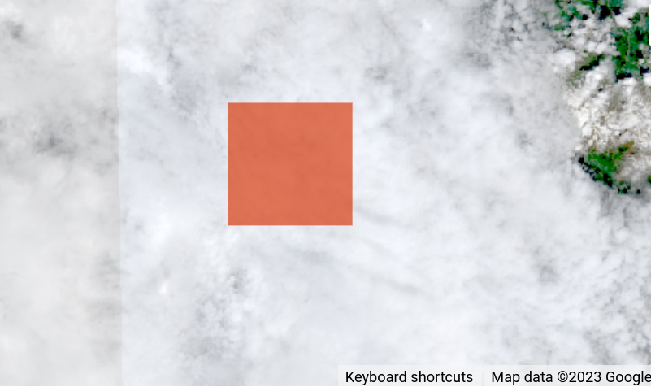

12 Demo 4: NDVI over time
Calculating NDVI over time
Prepare
- In this exercise, we will calculate NDVI values over time.
- starting with the sentinel-2 image from the last example
- Remove everything but the following lines:
// just keep the import statements ↓
var imageVisParam = {"opacity":1,"bands":["B4","B3","B2"],"min":85.84,"max":4206.16,"gamma":3.055};
aoi = ee.Geometry.Point([7.880419288840592, 46.29770703906289]);
imageVisParam2 = {"opacity":1,"bands":["B8"],"min":-1,"palette":["ff0000","ffff00","008000"]};
// just keep the import statements ↑
// move the function statemement up
function ndvi_fun(image){
var nir = image.select("B8");
var red = image.select("B4");
var zaehler = nir.subtract(red);
var nenner = nir.add(red);
var ndvi = zaehler.divide(nenner);
return ndvi
}
// filter the image collection by date and location
var s2 = ee.ImageCollection("COPERNICUS/S2_SR_HARMONIZED");
s2 = s2.filterDate("2023-09-01", "2023-10-03");
s2 = s2.filterBounds(aoi);
s2 = s2.first()
var ndvi = ndvi_fun(s2)
Map.addLayer(ndvi, imageVisParam2);Replace Point with Polygon
- Delete the
aoi-Point and replace it with a Polygon of the same name - Draw a polygon from about Lalden (North-East) to Zeneggen (South-West)
- Rerun the code, the output should be similar
Apply the function to the whole image collection
- Now, we want to apply our
ndvi_fun()to the whole image collection. - Remove lines
s2 = s2.first()var ndvi = ndvi_fun(s2)
- We can use
.map()for this. Add the following line:
var ndvi = s2.map(ndvi_fun);
print(ndvi);Visualize the output
- Now we want to create a chart of the ndvi values over time
- search through the docs for chart.
- consult the docs “ui.Chart.image.series” first
- Try the following
print(ui.Chart.image.series(ndvi, aoi));Debugging the chart
This will throw an error:
Error
No features contain non-null values of "system:time_start"Compare the two objects
Compare the to objects, s2 and ndvi. Much metadata was lost when we mapped the function over the collection.
s2 looks as follows:
features: List (218 elements)
0: Image COPERNICUS/S2_SR_HARMONIZED/20230101T102339_20230101T102333_T32TLS (23 bands)
type: Image
id: COPERNICUS/S2_SR_HARMONIZED/20230101T102339_20230101T102333_T32TLS
version: 1696354178264204
bands: List (23 elements)
properties: Object (101 properties) # ← lots of metadata
AOT_RETRIEVAL_ACCURACY: 0
AOT_RETRIEVAL_METHOD: CAMS
....
system:time_end: 1672568887220
system:time_start: 1672568887220ndvi looks as follows:
features: List (218 elements)
0: Image (1 band)
type: Image
bands: List (1 element)
properties: Object (1 property) # ← no metadata
system:index: 20230101T102339_20230
Copy the necessary properties
Instead of generating a new image, we can simply add the output to the original image collection:
function ndvi_fun(image){
var nir = image.select("B8");
var red = image.select("B4");
var zaehler = nir.subtract(red);
var nenner = nir.add(red);
var ndvi = zaehler.divide(nenner);
ndvi = ndvi.copyProperties(image, ["system:time_start"])
return ndvi
}Also, adapt the Chart-printing:
print(ui.Chart.image.series(ndvi, aoi));Run analysis on the entire year
- Now, extend the date range to the entire year
- Note how the ndvi values change over time, but have irregularities?
9
Debugging the chart again
- Determine the date of such an image by hovering over the chart
- in my chart, 2023-06-10 is such a date
// filter by that date (these can result more than one image, but no matter)
var fil = s2.filterDate("2023-06-10","2023-06-11")
// add the filtered image to the map. Apply the visualization parameters
Map.addLayer(fil)Filtering by cloud cover
This shows the issue: clouds!

- Check the metadata of the image.
- In the properties, there is a field
CLOUDY_PIXEL_PERCENTAGE. - in the docs, look for Filters
ee.Filter.metadata(name, operator, value)is depricated, useee.Filter.lt()instead
s2 = s2.filter(ee.Filter.lt('CLOUDY_PIXEL_PERCENTAGE', 20));Export the data
Now you can export the output as csv, svg or png